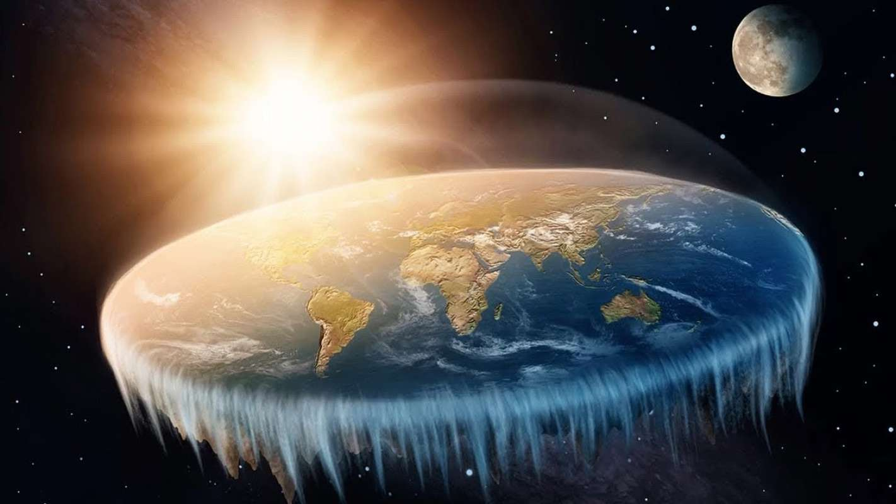

О нашем обществе
Мы - группа свободомыслящих людей, которые осмеливаются подвергать сомнению общепринятые догмы о форме нашей планеты. Наша миссия - распространять правду о плоской Земле и бороться с глобальной дезинформацией.

Неопровержимые факты
- Горизонт всегда выглядит плоским на уровне глаз
- Реки текут в разных направлениях, а не только "вниз"
- Никто никогда не видел кривизну Земли невооруженным глазом
- Авиаперелеты часто следуют нелогичным маршрутам на глобусе
- Все фотографии "круглой Земли" - это компьютерная графика
- Фотографии NASA содержат грубые элементы фотошопа
- На логотипе ООН изображена карта плоской Земли
- Многие космонавты, летчики и военные являются сторонниками плоской Земли
- Идеи плоской Земли подвергаются цензуре
- Все мировые религии подтверждают идеи плоской Земли
- Антарктида — ледяная стена, ограждающая диск
И много других фактов и их доказательства читайте в нашем Блоге
Присоединяйтесь к нам!
Если вы сомневаетесь в официальной версии формы Земли и хотите узнать правду, вступайте в наше общество!
Мы проводим регулярные встречи, эксперименты и исследования. Вместе мы сможем открыть глаза человечеству!
Контакты
Email: info@flatearthsociety.org